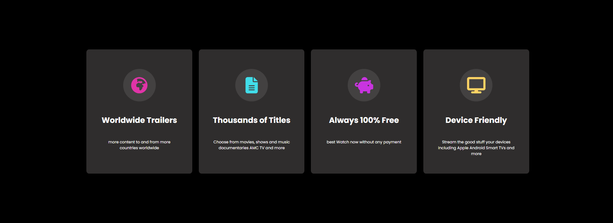
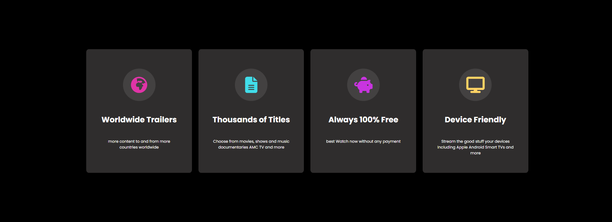
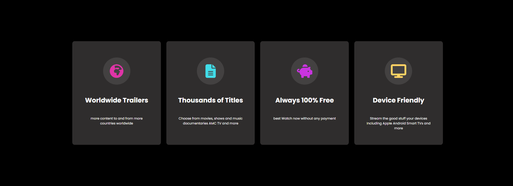

My Projects


 


Full stack developer who writes clean, elegant and efficient code.
Explore My ProjectsSaya adalah seorang pengembang web yang percaya bahwa membangun situs web adalah sebuah bentuk seni. Sama seperti seorang perangkai bunga yang membentuk rangkain dengan niat dan ketelitian, saya merancang pengalaman digital yang indah sekaligus fungsional.
Gairah saya terhadap kerajinan tangan sangat memengaruhi pendekatan saya terhadap pengembangan. Setiap baris kode ditulis dengan penuh pertimbangan, setiap keputusan desain bersifat disengaja, dan setiap proyek diresapi dengan kreativitas.
Ketika saya sedang tidak coding, Anda akan menemukan saya bekerja menggunakan tangan saya, membuat tembikar, melukis, atau bereksperimen dengan seni merangkai bunga. Kerajinan ini mengajarkan saya kesabaran, perhatian terhadap detail, dan nilai dari menciptakan sesuatu yang benar-benar unik.
